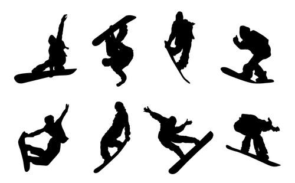

Leer snowboarden stap voor stap
Een digitaal platform voor snowboarders en coaches.
Start nu⚠️ Disclaimer: het gaat altijd beter gaan als je leert van een echt persoon dat weet wat hij doet.
Wat is SnowCoach?

SnowCoach helpt je om snowboard technieken te leren via oefeningen, visuele animaties maar is meer bedoeld voor instructoren die effe vast zitten met oefeningen en inspiratie nodig hebben.
Abonneer op RSS feed